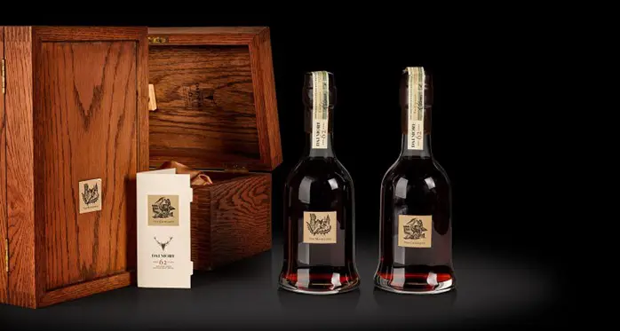
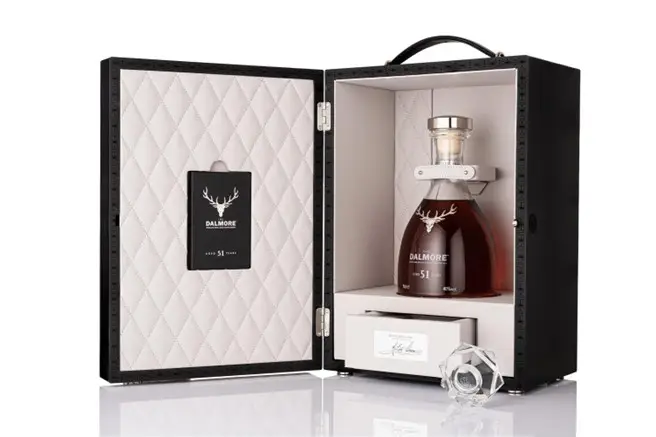

蘇格蘭高地區的「老酒銀行」大摩酒廠在2019年末歡度180歲生日，這場世紀慶生持續到2020年，仍讓全球威士忌市場興奮不已，大摩不只推出紀念輝煌時刻的180週年紀念酒──全球限量三瓶的大摩60年單一麥芽威士忌，並上市目前最高年份的大摩51年與全新「雪莉甄選系列」12年單一麥芽威士忌，不僅如此，大摩全系列包裝也全面換新裝，設計更顯尊榮奢華，邀請全世界酒迷一同慶祝大摩威士忌走入下一個180年。
榮耀麥肯錫家族，高年份的隱士
臨著克羅馬蒂峽灣而建，「隱世感」濃厚的大摩是世上最奢華威士忌品牌之一，為蘇格蘭威士忌產業的前瞻者，在1870年代，「年份」的價值觀尚未普及，市場上盡是未經橡木桶熟成的新酒，或最多熟成三年就裝瓶販售，曾救國王於鹿角下的麥肯錫家族（Mackenzie Bros Ltd.）不計利益，拒絕販售旗下大摩酒廠的新酒（new make），堅持熟成於優質橡木桶數十年才裝瓶，更在雪莉風味桶崛起前在西班牙赫雷斯（Jerez）超前部屬、經營雪莉酒桶事業確保取得最佳的橡木桶，在1885 年3月12日Ridley & Co.的《葡萄酒及烈酒貿易月報 Monthly Wine and Spirit Trade Circular》紀錄中，大摩已是全坎貝爾鎮最昂貴的威士忌。
180週年紀念版，首次曝光古董雪莉桶
走出坎貝爾鎮，大摩已是全蘇格蘭、全球最尊貴威士忌的代名詞，麥肯錫家族的遠見與果敢，讓單一麥芽威士忌與木桶熟成工藝提升到金字塔頂端，時至今日，大摩酒廠已坐擁一批堪稱「國家寶藏」的陳年原酒，在歡慶生日時推出自1951年6月7日蒸餾的「180週年紀念版威士忌」，將藏於酒窖的兩只雙胞胎古董雪莉桶曝光給全球酒迷，該紀念酒全球限量三瓶，從2019年至2021年每年推出一瓶，將使熱中收藏威士忌的高端買家持續瘋狂。
威士忌收藏名言：「當你在猶豫時，其他人已經超前。」大摩近年崛起於拍賣場的紀錄令人咋舌，在電影《金牌特務》中被形容為「一滴都不能浪費」的大摩62年傳奇名釀在2020年5月底落槌的倫敦蘇富比拍賣會上打破大摩紀錄，The Dalmore 62 Year Old The Cromarty和The Dalmore 62 Year Old The Mackenzie以高出估價2倍價錢成交，每瓶拍賣價高達266,200英鎊（約新台幣997萬）。

大摩51年台灣限量一瓶，將於9月拍賣
延伸大摩180週年話題，與「180週年紀念版威士忌」同為慶生亮點的「大摩51年」在2020年2月於倫敦上市，由首席釀酒師理查・派特森（Richard Paterson）傾注超越半世紀的心血，帶來大摩慶祝新10年的開始，象徵老酒銀行的開拓精神與悠久歷史。「大摩51年」全球限量51瓶，台灣僅獻一瓶並將於2020年9月進行拍賣，以精美水晶瓶與水晶瓶塞封存，鑲上經典純銀的12支鹿角的鹿首徽章向拯救國王的麥肯錫勇士致敬，細膩收藏在以菱格紋皮革內襯的黑梧桐木盒。
「大摩51年是一款非常高貴的單一麥芽威士忌，我很高興能密切參與這五十年的成熟過程，仔細考慮每次的蒸餾方式，並推敲新酒注入木桶後的各種變化。」首席釀酒師理查・派特森與「大摩51年」一同走過半個世紀，這款高年份珍釀先在美國波本桶中熟成，接著分別注入到1938年Colheita波特酒桶、初次波本桶、以及大摩獨家西班牙Gonzalez Byass酒莊瑪度沙（Matusalem）雪莉桶，最後再彼此勾兌裝瓶，香氣如黑莫雷洛櫻桃口味的拿破崙蛋糕，迷人的傳統英式果醬、摩德納香醋與Oloroso雪莉酒的高貴香脂氣味，被譽為「液態黃金」一般的寶藏。
